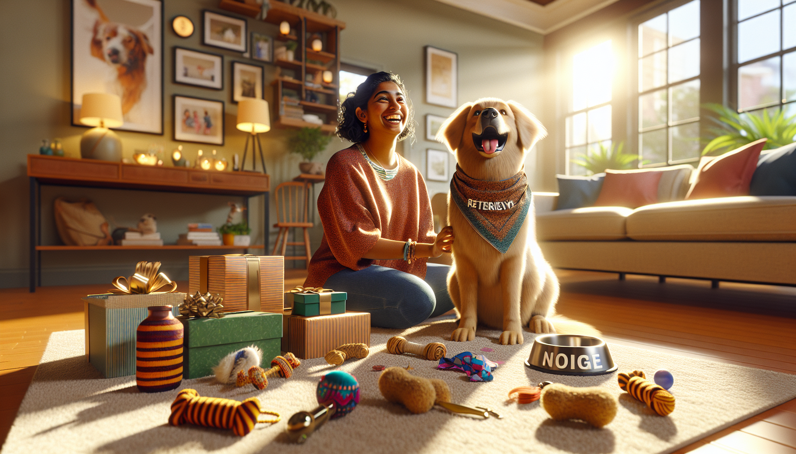

If you are a dog parent, you already know the truth: it does not take much to make your pup happy. A wagging tail, a favorite snack, extra cuddle time, or a new toy can turn an ordinary day into the best day ever. The challenge, of course, is that many pet owners want to give their dogs the world without spending a fortune doing it.
The good news is that spoiling your dog does not have to mean luxury beds, pricey subscription boxes, or endless shopping sprees. In fact, some of the most meaningful ways to treat your dog are simple, affordable, and easy to do at home. Whether you are shopping for your own furry best friend or searching for thoughtful gift ideas for a dog lover, there are plenty of creative ways to make a pup feel special on a budget.
In this guide, we are sharing practical and heartwarming ideas for how to spoil your dog without breaking the bank. From homemade treats to personalized accessories, these dog-friendly ideas prove that love matters more than price tags.
One of the easiest and most affordable ways to spoil your dog is to simply give them more of your attention. Dogs thrive on connection, and to them, time with you is often the greatest gift of all. A few extra minutes of play, affection, or outdoor adventure can make a huge difference in your dog’s happiness.
You do not need to spend money to create special moments. Try adding one small ritual to your dog’s day, like a longer morning walk, a game of tug in the evening, or a quiet cuddle session before bed. These little routines build trust and excitement, and your pup will quickly learn to look forward to them.
When people think of spoiling a dog, they often think of buying more things. But often, what dogs really want is more engagement, more enrichment, and more time with their favorite human.
Store-bought dog treats can add up quickly, especially if your pup has a taste for premium snacks. Making homemade dog treats is a fun and budget-friendly way to spoil your dog while also knowing exactly what goes into their food.
Many simple dog treat recipes use ingredients you may already have in your kitchen, such as pumpkin puree, peanut butter, oats, bananas, or sweet potatoes. You can bake a batch in advance and store them for the week, saving money while giving your dog something special.
Some easy homemade dog treat ideas include:
Always make sure the ingredients are dog-safe, and avoid anything with xylitol, chocolate, grapes, raisins, onions, or excessive sugar. If your dog has dietary sensitivities, homemade treats can be an especially smart option because you can tailor them to their needs.
Bonus tip: package homemade treats in a cute jar or treat tin for a thoughtful dog gift idea that feels personal and affordable.
You do not have to buy expensive toys to keep your dog entertained. Some of the best enrichment activities can be made from items you already have around the house. Dogs love novelty, textures, scents, and puzzles, and you can provide all of that without overspending.
DIY dog toys are ideal for pet owners who want to save money while still keeping things fun. Depending on your dog’s size and play style, you can make safe, simple toys that encourage chewing, sniffing, tugging, and problem-solving.
Mental stimulation is a wonderful way to spoil your dog because it prevents boredom and helps them feel engaged. A dog that gets to sniff, search, solve, and play is often just as satisfied as one getting a new store-bought item.
As with any DIY pet product, supervise your dog and make sure all materials are safe and durable enough for their habits.
Spoiling your dog can also mean making their everyday environment more cozy and personalized. You do not need to redesign your home or buy high-end pet furniture to create a space your dog loves. Small, inexpensive upgrades can make your pup feel pampered.
Think about the areas where your dog rests, eats, and relaxes. Washing their bedding, adding a soft blanket, organizing their toy basket, or placing their bed in a sunny favorite spot can instantly improve their comfort. Even rotating toys so they feel new again can make a simple day more exciting.
Budget-friendly ways to upgrade your dog’s space include:
This is also where personalized pet products can shine. A custom dog bandana, a name sign, a personalized food mat, or a special accessory can make your dog’s space feel unique without requiring a huge budget. Personalized items are especially great for gift shoppers who want something memorable and practical.
You do not need a birthday or holiday to make your dog feel adored. One of the sweetest ways to spoil your dog is to celebrate everyday moments. Got through a successful vet visit? Learned a new trick? Had a great walk at the park? Those are all reasons to make your pup feel extra special.
Dogs respond to excitement and routine, so adding tiny celebrations to ordinary life can create joyful memories for both of you. It might be a special chew after bath time, a photo session after grooming, or a “gotcha day” tradition with a homemade pup cup.
Simple celebration ideas include:
These moments do not have to be expensive to be meaningful. Often, the thought and enthusiasm behind them are what make them feel special.
If you do want to buy something for your dog, the smartest approach is to choose items that feel special and useful at the same time. Instead of filling your cart with random impulse buys, look for budget-friendly pet gifts that add personality, function, or sentimental value.
Personalized dog products are a wonderful option because they feel like a treat without always carrying the price tag of luxury pet gear. A custom item can turn an everyday essential into something charming and memorable. For gift shoppers, this is also a great way to give a dog lover something they will genuinely enjoy using.
Affordable personalized pet gift ideas include:
The best part is that these items often last longer than consumable treats or trendy toys, making them a better value over time. They also look adorable in photos, which every proud dog parent can appreciate.
It is easy to overspend on pets when every cute toy and treat seems irresistible. If you want to spoil your dog without breaking the bank, a little planning goes a long way. Setting a small monthly pet fun budget can help you buy intentionally while still making room for occasional surprises.
Try focusing on value instead of volume. One personalized accessory your dog uses often may be more worthwhile than a pile of low-quality toys that get ignored. You can also save money by shopping during seasonal sales, bundling gifts, and choosing products from small businesses that offer thoughtful craftsmanship.
Here are a few budget-savvy shopping tips:
When you combine intentional shopping with homemade fun and quality time, you create a balanced approach that keeps both your dog and your wallet happy.
Spoiling your dog is really about making them feel safe, happy, included, and loved. That can happen through a homemade treat, an extra walk, a cozy nap spot, a fun DIY game, or a personalized accessory chosen just for them. You do not need to spend a lot to create a lot of joy.
For pet owners, dog lovers, and gift shoppers alike, the secret is to focus on what brings real delight. Dogs notice your energy, your attention, and the care behind what you do. When you lead with love and a little creativity, even budget-friendly ideas can feel wonderfully indulgent.
If you are ready to treat your pup to something special, shop personalized pet products at SnoutAndAbout on Etsy.